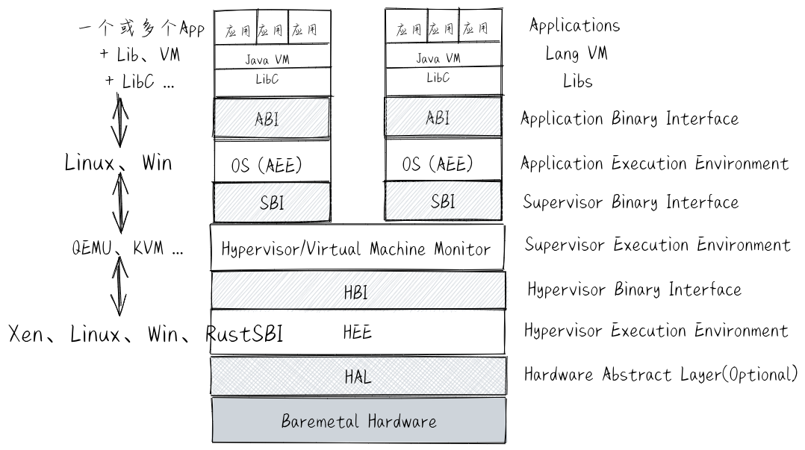
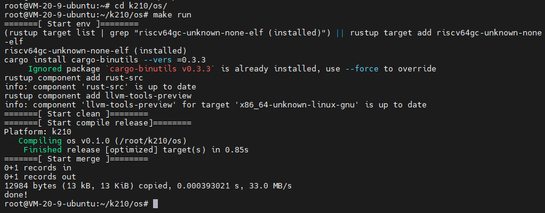
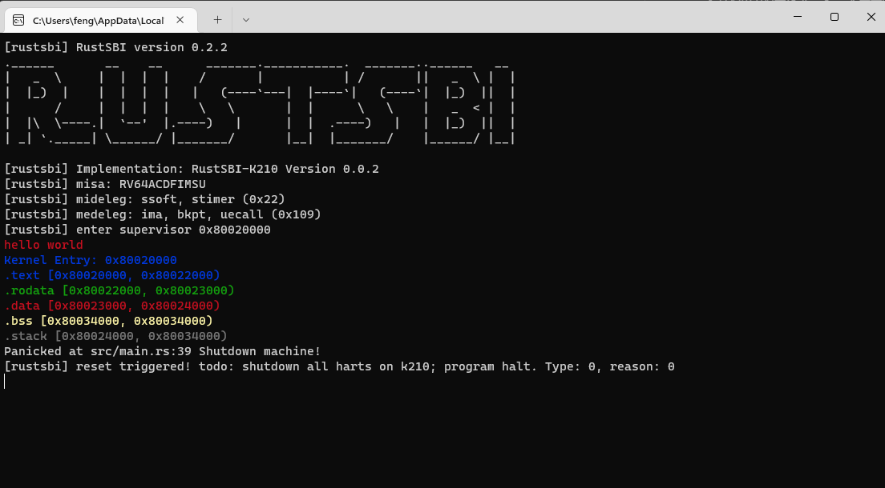

开始
事情从某一个深夜刷 Bilibili 说起。那天晚上，想起过年从家里带上来的 1GB SD 卡，用来完成 K210 系列的最后一课：录音并保存文件到 SD 卡和播放录音的功能，于是将最后一课的代码编译，烧录一气呵成。然后运行发现，sd card init fail…
一开始怀疑是 SD 卡文件格式有问题，然后格式化了好几次，分别都尝试了fat, fat32, ntfs, exfat，还是不行。迫不得已，跑去看源码，发现只支持fat32。于是重新又格式化了一遍，结果还是失败。都不能挂载到开发板里面。无奈只能查查其他开发板有没有这种问题，结果都是和容量有关（1GB、2GB、4GB不行，16GB可以）。
这根本不科学。。。我只坚信能不能识别 SD 卡和文件格式有关要么和卡的工作原理或者协议有关。和容量没半毛钱关系。但又不想深究挂载 SD 卡的原理和识别卡的原理。结果就是放弃。。。
故事到这，原本就该结束了。但是，我还是不甘心放下，躺在被窝里在 B 站搜着 k210. 直到看见一个视频。。。用稚晖君推荐的K210开发板启动rCore操作系统吧。
WOC，WOC。这算是我的一个埋在我心中几年的想法啊！！！刚刚买到手中时，就刷到一个文章，有西数大佬将 risc-v 适配 linux 的驱动提交到 linux 内核的仓库中，意味着 linux 系统可以安装在 k210 上啊。不出所料，文章就提到有人已经将 linux 0.11 迁移到 k210 上面了。于是我才萌生在这块开发板中搞个简单系统玩玩。
[后记] 看的是那种新闻文章，一开始并不知道是谁，后面发现好像是国人 Li Zhirui。
- 他用的是
Sipeed Maix开发板 K210 run linux 0.11，源码在这 - 后面西数的工程师 Damien Le Moal 又移植了 Linux 5.1.0
- 后面陆续有人移植了 Linux 5.6.0, 镜像在这 尝试了一下，
Maix的镜像，跑在K210好像有bug。 - Linux 5.8.0 源码，需要自己编译
第一个想法就是 linux 系统。不过 linux 系统还是太庞大了。所以看完视频后，就打算跟着 up 学操作系统，顺便还学了rCore, Rust。顺便还实现了自己的想法，就非常的 nice。于是，这个系列的坑，开始了~ （工作繁忙，随时搁置 or 放弃hhhh）
想法
rCore 需要 Ubuntu 开发环境，刚好我又有云服务器。其实 Rust 在 Windows 也可以的，就怕系统差异会导致其他问题，还是尽量保持一致吧~
反正代码不用开发，直接复制就行，就在 Ubuntu 里面搞算了，编译出来后，再拿到本地烧录到开发板上面跑。
环境搭建准备
Qemu:
1 | apt-get install pkg-config |
Rust
1 | export RUSTUP_DIST_SERVER=https://mirrors.ustc.edu.cn/rust-static |
开始
rCore
1 | # 克隆项目仓库 |
然后就按照教程
这俩文档，不能说类似。。。只能说一模一样。仔细看吧，又有些许不一样。而且这期间，我两个文档混着看，导致踩了不少 Rust cargo 版本、环境、编译工具链的坑。
一直走到了 使用QEMU运行内核 打印 “ok”，然而此时比没有意识到有啥问题。。。
在这之前，都是用的教程的 qemu 模拟运行，既然能开始引导到内核执行 Rust_main 了，那肯定得去 k210 跑跑。
make build 生成镜像bin，烧录进 k210 一气呵成。然后失败。。。
中间过了好久，期间还去看了两集 mit6s.081，最终以啃不动生肉而放弃QAQ
此时，才懵懵懂懂中，clone 下了 rCore-Tutorial-v3
1 | # 克隆项目仓库 |
此时，项目的 bootloader 切换为 rustsbi。Rust 的依赖和包版本更新到了2022年的版本。才消除了一些不兼容的警告如：llvm_asm、asm。又是一通 make build 后，生成镜像烧录，成功！！！激动的心，颤抖的手 ٩(๑>◡<๑)۶

心情平静一点点后，才发现，之前用的是 OpenSBI + QEMU，现在变成 RustSBI + k210。接下来，花了一堆时间，开始搞清楚两个 SBI 关系。
中间过了好久，期间尝试了好多东西
RustSBI+QEMU成功os.bin+k210失败，没有 bootloaderqemu5.0.0/pc-bios/opensbi-riscv64-virt-fw_jump.bin+os.bin+QEMU成功qemu5.0.0/pc-bios/opensbi-riscv64-virt-fw_jump.bin+os.bin+k210失败- 下载仓库
opensbi自己编译成功（这里还被riscv编译链折腾了好久） +os.bin+k210运行失败 - 下载仓库
opensbi的 release +os.bin+k210运行失败（应该是需要魔改或者降低到 0.3 才能成功。） - 用
hexdump对比rustsbi和opensbi的二进制 bin 文件，没有啥发现。 - 查看 rCore-Tutorial-v3 的Makeflie代码，搞清楚了
RustSBI和os.bin的关系。用hexdump查看合并后的 bin。（巨大的进展） - 下载仓库
rustsbi, 忘了有没有编译运行了 - 下载仓库
rustsbi-k210, 发现更新了 0.2.0 版本，尝试编译，编译成功。 - 用
rustsbi-k210-v2+os.bin+k210成功！
终于可以真正开始了。
真正的开始
在前面胡乱尝试的差不多后，终于从头开始阅读 v3 文档。补充了好多基础
- ABI -> Application Binary Interface 和 API
 - 异常控制流（指令跳转）
- 中断（时钟中断、控制台中断等。外设中断）
- 异常（应用级别的程序异常）
- 陷入（系统调用 syscall, retn）
- 进程上下文切换（CPU时间片）、内存地址空间映射
- 程序内存布局和编译链接过程（符号替换，内存地址布局重置，符号重定位）
- Qemu 启动流程（）
- 0x1000
- 0x80000000 (bootloader, bios)
- 0x80200000 (os)


- 被调用者保存(Callee-Saved) 寄存器、调用者保存(Caller-Saved) 寄存器，保存在栈中。
sp是一个被调用者保存寄存器。


照着教程一步步完成了
这里搞清楚了 Makefile 文件的编写，方便了一大坨，后面只需要修改代码，然后make run，把镜像拉出来烧录就OK了。主要分为几步：
- 去掉有关
QEMU的命令，永久使用真机k210 - 调为永久 release
- 加了点输出信息，能更加分清不同阶段(make run env clean build kernel merge)做的事情
- 其中merge 阶段负责
dd，这样方便多了。
1 | cp os/target/riscv64imac-unknown-none-elf/debug/kernel.bin . |

输出和颜色
最后就简单啦~ 调用SBI打印字符串。没啥难度。
后面有点意思的是自己摸索出打印日志，就还挺OK！
贴个成功的图，第一章完结
